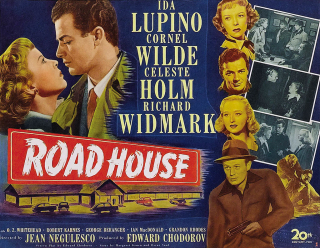
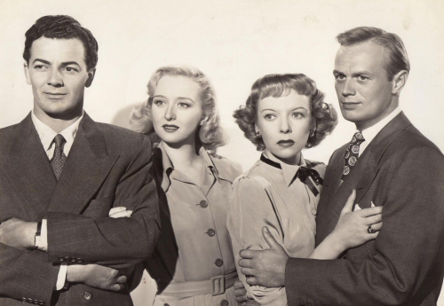

The film noir classic Road House (1948) contains one of Ida Lupino's most compelling performances in a career full of them. It was made at a crossroads of her life and career, when she was in the middle of an extended transition from leading actress to being a writer, producer, and director.
As part of the larger story of the making of this film, here is the story of how its cast was assembled. This tale brings together a number of interesting personalities in post-war Hollywood, several of whom were also at critical points in their respective careers.
Originator: Ida Lupino
In September, 1947, Ida Lupino herself initiated the project that became Road House. Early that year, Lupino had finished her long-term contract at Warner Brothers. Seeking creative control over her acting career, she rejected a new exclusive contract and instead chose to become an independent producer. In February, she formed Arcadia Productions with producer Benedict Bogeaus and took on the job of producer of her own movies, with an ambition to produce others as well. By late summer, however, she had nothing to show for her hard work. (See this earlier article for more on this episode in Lupino's career.)
Meanwhile, amongst the many scripts, stories, and books she had been poring over in search of good material, Lupino found a story called The Dark Love, by Margaret Gruen and Oscar Saul. She decided that this story should be her next project. At this time, prominent Hollywood agent Charles Feldman was attempting to win her services, and he and Ida worked out a deal where they purchased the story rights for $20,000 and then sold them to 20th Century-Fox with the condition that Lupino play the lead. Her salary would be $95,000, plus $15,000 profit on the story sale. Feldman waived his commissions and Lupino joined his agency.
Interestingly, this story deal happened at virtually the same time that Lupino dissolved Arcadia Productions. The first mention of Lupino's interest in Dark Love in the Hollywood press was on September 2, 1947 in a Hedda Hopper column. The very next day Sheilah Graham carried an item that "Ida Lupino and Benedict Bogeaus have called off their picture deal. They couldn't get together on story or price." Ten days after that, Louella Parsons broke the news that Lupino would be doing The Dark Love—already retitled Road House—at 20th Century-Fox.
Could the Lupino-Bogeaus breakup have been precipitated by The Dark Love? Why did Lupino not attempt to produce The Dark Love herself via Arcadia Productions as she had tried with other material? Here are some considerations: first, after seven months of unsuccessful attempts at producing other pictures, she was frustrated with that role; second, Feldman's deal was very lucrative for her and also provided her choice of story; third, she had a contractual obligation to 20th Century-Fox for one picture—an obligation that had been outstanding for several years.
So Lupino gave up her independent production efforts—temporarily, it turned out—and returned to acting at one of the large Hollywood studios. The fact that she had selected the story, though, was a major difference from her earlier career, when she was a contract player with little to no say in the material she was given.
Co-star Victor Mature?
The initial press reports for Road House in September mentioned Victor Mature as Lupino's leading man. Mature, a star at 20th Century-Fox for several years but long derided as an actor, was riding a wave of good notices for his performance in Kiss of Death—released the previous month. As Louella Parsons wrote in her item announcing the Road House role for Lupino, "I used to feel I could take or leave [Victor Mature] as an actor, but now I do not want to leave him, because he is that good." In mid-October, Hedda Hopper wrote that Mature was the "hottest star in town".
Road House was originally slated to begin production in November. It would not actually start until late the next March. Press reports are not explicit about the reasons for the delays, but it is likely that finding a director and casting the two leading male roles contributed. Four directors turned down the project, according to William Donati in his Lupino biography. And while Lee J. Cobb was the initial name tossed around for the "heavy" role, according to film historian Eddie Muller in the 2008 DVD commentary, 20th Century-Fox studio chief Darryl Zanuck wanted hot newcomer Richard Widmark. Waiting for him to be available may thus have been another reason.
Victor Mature was still being mentioned in the press as Lupino's leading man as late as November 24. But that same month, other reports suggested that The Chair for Martin Rome (later released as Cry of the City) would be Mature's next film. Indeed, that film started production in late December and Mature was in the starring role. The identity of Lupino's co-star for Road House was still up in the air.
Lupino did not let the delays stop her from preparing. In late December, Sheilah Graham wrote that "most of the story takes place in a bowling alley. And that's where you'll find Ida these days and evenings—learning to bowl."
Academy-award candidate Celeste Holm
The next casting news did not come until January 26, 1948, when the press reported that Celeste Holm had "an important role in Road House". Holm was an ex-Broadway actor, most notable for originating the role of Ado Annie in the 1943 stage hit Oklahoma. In 1946, she signed a contract with 20th Century-Fox and did a couple roles in relatively unnoticed musical films. By early 1948, however, she was receiving spectacular notices for her first dramatic role, in Gentleman's Agreement—including Academy Award talk as supporting actress. That film had been released just two months earlier in New York and Chicago and was still not released nationally.
Director Jean Negulesco
A director for Road House was finally found two weeks later. On February 11, Edwin Schallert of the Los Angeles Times reported that 20th Century-Fox had signed Jean Negulesco to helm the movie. Negulesco was coming off eight years at Warner Brothers—most recently directing Johnny Belinda. During production of that film, Jack Warner became annoyed that Negulesco was taking too many pictorial shots. Hedda Hopper described the aftermath in her January 29 column: "Jean Negulesco brought in Johnny Belinda for $1,300,000—nearly $250,000 under budget. Then 10 days before Christmas, has was laid off by Warners and hasn't worked since. If that's gratitude, we should find a new meaning for the word. I'm told by those who have seen it that Belinda is one of the most sensitive, beautiful and artistic pictures ever made."
Negulesco recalled, "After Warner gave me the sack, I was very sad and I thought of going back to painting and quit making films." Zanuck and 20th Century-Fox snapped up Negulesco in February and paid him $3000 a week, three times his previous salary. Negulesco told Hopper, "At the first producers' meeting, I thought I was being kidded when asked [by Zanuck], 'What can I do to make you happy? Just name it.'"
Lupino was no doubt pleased that Negulesco was on board. Her last film, Deep Valley, completed over a year earlier at Warner Brothers, was also directed by Negulesco. During that film, she was extremely happy working with Negulesco and his crew. She was reported saying that she wanted him to direct her next picture. She also stated that she would stay at Warners if they allowed her to choose her own directors. Her demands weren't met by Warners, yet Negulesco was indeed directing Lupino's next film—at 20th Century-Fox. Could Lupino have pulled strings with Zanuck behind the scenes? Interestingly, Negulesco recalls that Zanuck told him at their first meeting, "I've watched a film of yours that I liked a lot: Deep Valley."
Richard Widmark, aka 'Tommy Udo'
In late February, the two male leads were finalized, clearing the way for production to start within a few weeks. Hedda Hopper reported that Cornel Wilde and Richard Widmark would fill those roles.
Richard Widmark entered Road House on a career trajectory similar to Celeste Holm. He, too, was ex-Broadway actor and newcomer to Hollywood who was receiving huge plaudits for his most recently released film. Unlike Holm, Widmark's breakout had come in his very first film, Kiss of Death—the same film that raised Victor Mature's acting reputation in the late summer of 1947—where Widmark played the maniacal Tommy Udo, a character infamous for pushing a woman in a wheelchair down a flight of stairs.
Widmark was currently finishing up The Street With No Name as another murderer. In January, he had told Hedda Hopper, "This will be my last [such role]. I didn't come into pictures to be typed as a killer; I'm an actor—I hope." His transition away from psychopaths would take a bit longer, however, as his role in Road House would be similar.
Leading man Cornel Wilde
Cornel Wilde, Lupino's new leading man in Road House, was one of 20th Century-Fox's top stars of the previous few years. He had already been in two films with Lupino—both before he hit the big time. In High Sierra (1941) he had a small role, while in Life Begins at Eight-Thirty (1942), he had been Lupino's love interest, with the top male role filled by Monty Woolley.
Wilde's breakthrough came in 1945 with the role of Frederic Chopin in the biopic A Song to Remember, for which he earned an Academy Award nomination as best actor. His most recent project had been The Walls of Jericho at 20th Century-Fox, with Linda Darnell, Anne Baxter and Kirk Douglas. After that completed, he spent a lot of his energy—unsuccessfully—trying to find a suitable Broadway play for him and his wife Patricia Knight.
The marriage of Wilde and Knight was on the volatile side, apparently, and attracted a lot of attention by the Hollywood press. The previous summer, Edwin Schallert of the Los Angeles Times, discussing a temporary break up, wrote that their relationship was "considered one of the most celebrated of love idylls In Hollywood history". Wilde had also gotten a reputation related to his attempted promotion of his wife's career. In November 1947, Louella Parsons wrote that Humphrey Bogart "doesn't want to be another Cornel Wilde and get himself disliked at the studio or criticized in the press because he keeps asking for his bride as his movie partner." Parsons reassured Bogart, "I don't think your case and the Cornel Wilde case are in the least comparable. Betty [Bogart's wife Lauren Bacall] has already made a success and I never heard of your trying to push her."
A glittering cast
So by late February, 1948, the Road House lineup was full of celebrated stars. Darryl Zanuck was clearly not holding back. With top-billed Ida Lupino was one of 20th Century-Fox's top male box office stars and two of the hottest new supporting players. Director Negulesco said of Road House: "It's the finest cast I've ever had."
As the cast was finalized, Widmark and Holm both received Academy Award nominations for their supporting roles in their most recent films: Kiss of Death and Gentleman's Agreement, respectively. Director Negulesco also had just had a breakout, award-nominated performance of his own— Johnny Belinda—though the full impact of that awaited its release later in 1948. He would receive an Academy Award nomination for best director the next year.
On March 10, The Hollywood Foreign Press Association gave their Golden Globe award for best supporting actress to Celeste Holm and their award for best male newcomer to Richard Widmark. Then, on March 20—two days before Road House started production—Holm won the Academy Award, while Widmark lost out to Edmund Gwenn for Miracle on 34th Street. Road House was starting on a high note for its supporting cast.
Stay tuned for the next edition, which will cover the making of the film and its aftermath for Lupino, Wilde, Widmark, Holm, and Negulesco.

. . .
Further watching
- Watch the full movie Road House here
- Better yet, buy the great Kino Lorber blu-ray
Sources
- Newspapers.com archives for United States newspapers
- Media History Digital Library archives of Hollywood fan magazines and trade papers
- Ida Lupino: A Biography by William Donati, University Press of Kentucky, 2000
- Jean Negulesco: The Life and Films by Michelangelo Capua, McFarland & Company, Inc., 2017

Comments